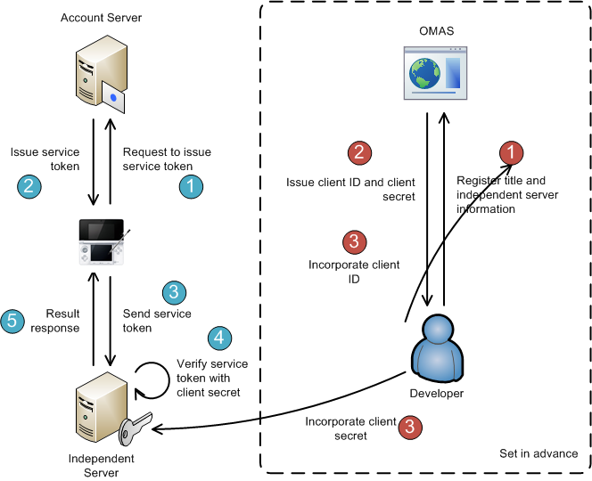

In addition to servers provided by Nintendo, applications can connect to servers that are provided and operated independently by licensees ("independent servers").
This chapter includes a description of the authentication process when an application connects to an independent server, and notes on using account information on an independent server.
Authentication information specific to friend accounts is included in service tokens for independent servers acquired using the NEX library. See the CTR-NEX Manual when getting service tokens for independent servers using the NEX library. For guidelines on the use of account information by independent servers, see the CTR Guidelines.
5.1. Authenticating When Connecting to an Independent Server
When connecting to an independent server, both the client-side application and the server must authenticate with the Nintendo Network.
5.1.1. Authentication Mechanism
When connecting to an independent server, authentication is handled using service tokens issued by the account server. A service token guarantees to an external server that the client account and device have been successfully authenticated. When an application requests a service token, that service token must pass through Nintendo Network authentication before it is issued, so that the application can handle the result of authentication based on the response to the request. Service tokens are also issued in encrypted form. The server can verify that the client connecting to it has successfully been authenticated by decrypting and validating the service token that was sent from connection source to the server.
To issue a service token, a client ID unique to each independent server is required. Also, service token decryption requires a client secret encryption key. To receive a client ID and client secret, you must register your independent server on the Nintendo Online Title Management System (OMAS). To get the independent server's service token from the application, you must also associate the independent server and the application's title information in OMAS. At that time, multiple applications can be associated with a single independent server. For more information, see the How to Use page on the OMAS site.
There are two versions of the service token specifications: V1 and V2. Both versions can be used by independent services, but V2 provides stronger security. We recommend using V2 unless there is a specific reason to do otherwise, such as maintaining compatibility with previous titles.

A service (such as one of the features documented in 5.7. Web API for Independent Servers) is authenticated using the client ID and client secret. You must handle both the client ID and client secret as highly confidential information. Do not give the client secret to the application to decrypt the service token.
5.1.2. Service Token (V1) Specifications
A service token (V1) is a string of up to 512 characters before encryption.
A service token (V1) is decrypted as follows.
- Decodes data in
Base64. - Decrypts data using AES. The AES parameters are CBC mode, a key length of 128 bits, an IV of all
0, and padding ofPKCS#7.
Decrypted service tokens have the following format.
\key\value\key\value...(repeats)...\h\value |
The following table describes the keys to register.
| Identifier | Description | Comments |
|---|---|---|
| z | Platform ID | Information used to identify the platform. Fixed to 0 for the CTR. |
| u | Principal ID |
A constant 32-bit numeric value that is assigned to each Nintendo Network account. It is denoted as a decimal number of up to 10 digits. |
| a | Account ID | The user's Nintendo Network ID. |
| s | Server environment |
A string that identifies the environment of the account server that issued the service token. It is denoted as a two-character string consisting of one capital letter, followed by one number. |
| v | Game version | The version of the client-side application that obtained the service token. It is denoted as a 4-digit hexadecimal number. Letters are uppercase. This value is shifted right by 4 bits, and it matches the remaster version value specified with the RSF file. (For the least significant 4 bits of the game version, the bits added by Nintendo for administrative purposes are added.) |
| e | Unique ID | The unique ID of the client-side application that obtained the service token. It is denoted as a 5-digit hexadecimal number. Letters are uppercase. |
| t | The time the token was issued | The Unix timestamp from when the token was generated. |
| h | Tampering check hash value |
The first eight characters of the SHA-1 hash value of the string value, minus the |
Although the order of the values is not guaranteed, the tampering check hash value is always last. A value never includes a backslash symbol ('\').
Sample decryption code is included at the end of this document as an appendix.
5.1.3. Service Token (V2) Specifications
Service token (V2) is a string of up to 524 characters prior to decryption. (Differences from service token V1 are indicated with bold text.)
A service token (V2) is decrypted as follows.
- Decodes data in
Base64. - Decrypts data using AES. The AES parameter is CBC mode, the key length is 128 bits, the IV is the value included in the API response (leave as BASE64 encoded), and the padding is PKCS#7.
Decrypted service tokens have the following format.
\key\value\key\value...(repeats)...\h\value |
The following table describes the keys to register.
| Identifier | Description | Comments |
|---|---|---|
| z | Platform ID | Information used to identify the platform. Fixed to 0 for the CTR. |
| u | Principal ID |
A constant 32-bit numeric value that is assigned to each Nintendo Network account. It is denoted as a decimal number of up to 10 digits. |
| a | Account ID | The user's Nintendo Network ID. |
| s | Server environment |
A string that identifies the environment of the account server that issued the service token. It is denoted as a two-character string consisting of one capital letter, followed by one number. |
| v | Game version | The version of the client-side application that obtained the service token. It is denoted as a 4-digit hexadecimal number. Letters are uppercase. This value is shifted right by 4 bits, and it matches the remaster version value specified with the RSF file. (For the least significant 4 bits of the game version, the bits added by Nintendo for administrative purposes are added.) |
| e | Unique ID | The unique ID of the client-side application that obtained the service token. It is denoted as a 5-digit hexadecimal number. Letters are uppercase. |
| t | The time the token was issued | The Unix timestamp from when the token was generated. |
| h | Tampering check hash value | The entire SHA-1 hash value of the string value, minus the \h\value portion. Letters are lowercase. |
Although the order of the values is not guaranteed, the tampering check hash value is always last. A value never includes a backslash symbol ('\').
The service token (V2) response includes the token signature.The signature is in the PKCS #1 v1.5 format. It is generated using the sha256WithRSAEncryption algorithm and then BASE64 encoded.
You can use the server's public key to verify that the service token (V2) is an authentic token published by Nintendo. Use the following public key to authenticate signatures in both the development and production environments.
-----BEGIN PUBLIC KEY----- MIIBIjANBgkqhkiG9w0BAQEFAAOCAQ8AMIIBCgKCAQEApu5aRscPC88NlCUQMaY2 uYhSbsElLQ0w8j/1PU2eJ3WgJ708cgtfjGXf6FKqsr3Y61imC2lBG0ZAy03aTYpJ G3icAekHd4kupd9m1YP+sqfALIf6thtzBPPDuV0xoB5gzcbdTULYDdMYbtKdoHKL UjJHORmtiqF6pmwYWxcRmCTmQby/wtuMUBVZc+e+sl4r6pKLkGD+eLfv2y0ctI44 CfHuDNMU3rXiBlDADLIek/k34ksEZ9c1Hgol9YBFMko5jsknIiAeZ0jsPCKxJCZV U4XkNZOGDYLY04ABWYlqQ1VTnI5LonyLqvsujgsAadBBzzU2UCM4BrZ+FenGowHK mQIDAQAB -----END PUBLIC KEY-----
This public key is subject to change. Check the support site for the latest information.
Sample decryption code is included at the end of this document as an appendix.
5.1.4. Implementation
To request a service token, the application must call the nn::act::AcquireIndependentServiceToken function, passing in the client ID as an argument. If the application passes authentication, and a service token is obtained, the function returns success. The application then sends this service token to the independent server. The independent server decrypts the service token received using the client secret, and verifies the token using the tampering check hash value contained in the decryption result.
If the service token cannot be obtained, because of either an authentication failure or a communication failure, the nn::act::AcquireIndependentServiceToken function returns failure. Generally, the application does not need to keep track of the reason for the failure. It only needs to get the error code corresponding to the failure from the nn::act::GetErrorCode function, and display the error code and message in the error viewer. However, some failures are caused by implementation errors in the application. Developers must fix these errors during development so that they do not occur in production.
If the application successfully obtains the service token, but for some reason a communication error later occurs with the independent server, handle the error appropriately in the application and display the error if necessary.
The client ID of the independent server and the unique ID of the application cannot be used except in the combination registered in OMAS. You must register these IDs in OMAS before using them. You must also set appropriate unique IDs in the RSF file before using an application to get a service token.
5.2. Separating Independent Server Environments
When setting up an independent server, we highly recommend that you provide an environment for testing and development that is separate from the production environment so that the typical user is not affected by development and testing once you start providing service.
The following procedure is conceivable for switching the independent server environment that an application running on the CTR connects to.
5.2.1. Dummy DNS Server
You can set up a DNS server that resolves the hostname of the independent server into a different IP address than the production environment, and then specify that DNS server in CTR network settings or in the access point.
Note that if a third party has set up a DNS server with the same settings, you can similarly switch the IP address you connect to even from a retail system.
5.2.2. Service Locator
You can assign different access points based on the specified account server environment by encrypting a service token once on a shared independent server for all environments.
Usually, development hardware gets a service token from the development environment account server, and retail hardware gets a service token from the production environment account server.
You must use this method along with another method if you want to perform more intricate switching between independent server environments without linking to an account server.
5.3. Supporting Multiple Account Server Environments
The independent server must take into account the possibility that service tokens generated by multiple account servers may be received. The account server issuing the service token can be distinguished from other account servers as follows based on a value included in the decrypted service token.
- D1 through D9: Development environment
- L1 through L9: Production environment
- S1 through S9: Lotcheck environment
Account IDs and principal IDs on different account servers may conflict. To identify a Nintendo network account on an independent server, use a unique ID based on a combination of the account server environment name and the principal ID, instead of just the principal ID. Just in case a problem occurs, make sure that you do not mix IDs from different environments, even if you use a dummy DNS server or service locator to ensure there is no access from accounts belonging to different environments.
Finally, if the independent server directly accesses the web API of the account server, the request URL differs for each account server. Make sure that you do not apply the Web API response to a different account server environment.
The number of account server environments may be increased temporarily or permanently in the future. Make sure that unexpected notifications of environment information do not affect your independent server in the production environment.
5.3.1. Support for Testing by Nintendo
In addition to the Lotcheck performed before an application master ROM is uploaded, Nintendo tests compatibility with existing titles before releasing a system update. During this testing, Nintendo accesses your server through an account registered with the Lotcheck environment account server so that the independent server can distinguish that access from access by CTR retail hardware on the market.
Although you are not absolutely required to support the compatibility testing that is performed at irregular intervals before system updates after uploading an application master ROM, Nintendo can perform more thorough testing on your application if your independent server allows constant access from accounts in the Lotcheck environment. In addition, you can ensure that typical users are not affected during the Lotcheck of localized versions and patches by quarantining each environment against access from accounts.
If you do not want Nintendo to access an independent server from a Lotcheck environment account during testing or if special settings, such as for a dummy DNS server, are required before accessing the server, be sure to indicate that fact in your Lotcheck submission documents.
Because account server environments other than the development and production environments, such as the Lotcheck environment, are only used temporarily, they do not need to support the account server Web API. Please contact Nintendo support if you need support because of the particular configuration or features of your independent server.
5.4. Associating Independent Server Accounts With Nintendo Network Accounts
If you want to associate an independent server account with a Nintendo Network account, associate the independent account ID with the principal ID that is contained in the service token. If there is no licensee independent account, you can use the principal ID as the user ID on the independent server.
Do not use the account ID for association, because it could change.
After you have finished associating the accounts, the application can determine whether to require users to enter the password of the independent-server account when connecting to the independent server.
The licensee must manage the Nintendo Network account and its associated account. Nintendo will not manage information about whether a Nintendo or other account is associated with an independent server.
If you want to store independent-server account IDs and passwords without associating them with Nintendo Network accounts, store them in the account-specific save data on the CTR.
The namespace of the account ID and principal ID differ depending on the account server environment. If your independent server is not divided into a development, Lotcheck, or production environment, account associations could pose problems. You must handle this in some way, such as by managing account IDs and principal IDs together with the server environment values in the service tokens, or by clearing the account information before and after Lotcheck.
5.5. Using User Information
If you need to use user information registered for the current account on the independent server, the application on the CTR must get this information using the account library, and send it to the independent server. Nintendo generally does not provide a means for independent servers to communicate directly with the account server to get information.
You must gain the user's consent before sending user information from a CTR application to an independent server. For example, use user information as the default values when you ask the user to enter information for an independent service. However, prior consent is not required for the following information.
- Principal ID
- Account ID
- Account Mii Data (including the nickname and birthday)
- Friend List
- Blacklist
- Country of Residence
- Region of Residence
- Time Zone/Offset
Do not send user information from an account on the console other than the current account to the server.
5.5.1. Supporting Updates
All fields other than the principal ID, persistent ID, and transferable ID are subject to change, either due to update by the user or a modification by Nintendo for operational reasons. If you maintain any of this information on the independent server, you must update it to the latest information on the CTR system when the user next accesses the independent server.
5.5.2. Supporting Modification of Account IDs
Although users cannot change their account IDs once they have been created, Nintendo administrators may change them for operational reasons. If the independent server stores the user's account ID, it must check periodically whether it has changed, and update the information on the independent server if it has.
Nintendo provides a web API to support this. You can use this API to get a list of Nintendo Network accounts from the account server whose account IDs have changed during a specified period. The web API returns the results as a list of principal IDs. You must then use a different function in the web API for converting principal IDs into account IDs, and get a list of the latest account IDs. For more information, see the web API specifications (described below).
5.5.3. Supporting Account Deletions
If you are associating Nintendo Network accounts with accounts on your independent server, when the Nintendo Network account is deleted, you must either disassociate the account on the independent server, or delete it. In either case, the independent server must periodically check for deleted Nintendo Network accounts, and appropriately handle any accounts on the independent server associated with them.
Nintendo provides a web API to support this. You can use this API to get a list of account IDs from the account server that have been deleted during a specified period. For more information, see the web API specifications (described below).
5.6. Security
You must take the following measures when obtaining a service token from the account server and sending it to an independent server.
- You must encrypt the entire communication path. If it is impossible to encrypt the communication path, prevent snooping on the path by setting a short expiration period.
- Take measures to prevent replay attacks.
Each independent server is responsible for implementing security measures on communication after authentication using the service token is complete. However, when identifying users who are accessing the independent server, use the principal ID included with the service token rather than the principal ID obtained directly from the client for authentication.
5.7. Web API for Independent Servers
Although generally you must get account information by using a CTR system, some operations cannot be made by using the CTR. In these cases, Nintendo provides a feature for the independent server to connect directly to the account server. At present, the following features are available from the web API: getting a list of users whose account IDs have changed, getting a list of users whose accounts have been deleted, and converting between principal IDs and account IDs.
5.7.1. Specifications Common Throughout the API
The following specifications are common to all API functions described below.
- Communication Protocol
- HTTP over TLS
- Required HTTP Request Headers
- X-Nintendo-Client-ID: The client ID issued to you when you submitted your application for development.
- X-Nintendo-Client-Secret: The client secret issued to you when you submitted your application for development.
- Response HTTP status code
- If a normal response is returned, the HTTP status code is
200. - If an HTTP status code other than
200is returned, there may be a server problem or a mistake in the request format.
- If a normal response is returned, the HTTP status code is
- Response XML Format
- Line breaks and indentation are not significant, and their presence is not guaranteed. Obtain data from the response using an XML parser or other means.
5.7.2. API Function for Getting the List of Users With Changed Account IDs
You can use this function to get a list of the principal IDs of users whose account IDs have been changed by a Nintendo administrator. If you store account IDs on the independent server, you must periodically check the results from this function, and get a list of the users whose account IDs have changed. If any of the users in that list are on the independent server, use the function for converting between principal IDs and account IDs (see below) to get the new account IDs, and overwrite the account IDs on the independent server.
We recommend calling this function about once per day. Although it is also fine to check once per hour, please do not check any more frequently than that. However, if there are a lot of responses, you can call the function a number of times while changing the offset value. Up to three retries are allowed if a function call fails because of a problem with the account server.
- Request URL
- Development environment:
https://game-dev.accountws.nintendo.net/v1/api/admin/changed_userid - Production environment:
https://accountws.nintendo.net/v1/api/admin/changed_userid
- Development environment:
- Request Method
- GET
- Request Parameters (Query String)
- startdate: Starting date and time of the search period (UTC). Note: Required.
- enddate: Ending date and time of the search period (UTC). Note: If not specified, it is the date and time executed.
- offset: Offset value. Note: If not specified, it is 0.
- limit: Maximum number of responses (1 to 1000). Note: If not specified, it is 1000.
- Response Fields
- total: Total number of records matching the search conditions.
- pid: Principal ID of the user.
- timestamp: Date and time the account ID was changed (UTC).
If there are more than 1000 matches, increase the offset value to get the matches beyond the 1000th.
Below are a sample request and response. The results are in ascending order by date modified.
0001 GET /v1/api/admin/changed_userid?strdate=2012-12-01&enddate=2012-12-01 HTTP/1.1 0002 Host: game-dev.accountws.nintendo.net:443 0003 X-Nintendo-Client-ID: 0123456789abcdef0123456789abcdef 0004 X-Nintendo-Client-Secret: 0123456789abcdef0123456789abcdef 0005 Connection: close 0006 0007 HTTP/1.1 200 OK 0008 Content-Length: xxx 0009 Content-Type: application/xml; charset=UTF-8 0010 Date: Tue, 24 Jul 2012 06:21:39 GMT 0011 Server: xxx 0012 Connection: close 0013 0014 <modified_persons total="28" startdate="2012-12-01T00:00:00" enddate="2012-12-01T23:59:59" offset="0" limit="1000"> 0015 <modified_person timestamp="2012-12-01T00:48:23"> 0016 <pid>1357262754</pid> 0017 </modified_person> 0018 <modified_person timestamp="2012-12-01T02:18:08"> 0019 <pid>1011680135</pid> 0020 </modified_person> 0021 <modified_person timestamp="2012-12-01T05:03:48"> 0022 <pid>842379520</pid> 0023 </modified_person> 0024 ... 0025 </modified_persons>
5.7.3. API Function for Getting the List of Users With Deleted Accounts
You can use this web API function to get a list of principal IDs of accounts that have been deleted during a specified search period (start and end date/times). If you store account information on the independent server, you must periodically check the results from this function, and get a list of the users whose accounts have been deleted. If any of the users on your independent server are on this list, you must take appropriate measures, such as deleting any personally identifiable information.
We recommend calling this function about once per day. Although it is also fine to check once per hour, please do not check any more frequently than that. However, if there are a lot of responses, you can call the function a number of times while changing the offset value. Up to three retries are allowed if a function call fails because of a problem with the account server.
- Request URL
- Development environment:
https://game-dev.accountws.nintendo.net/v1/api/admin/deleted - Product environment:
https://accountws.nintendo.net/v1/api/admin/deleted
- Development environment:
- Request Method
- GET
- Request Parameters (Query String)
startdate: Starting date and time of the search period (UTC). Note: Required.- enddate: Ending date and time of the search period (UTC). Note: Required.
offset: Offset value. Note: If not specified, it is 0.limit: Maximum number of responses (1 to 1000). Note: If not specified, it is 1000.
- Response Fields
total: Total number of records matching the search conditions.- pid: The target user's principal account ID.
- timestamp: Date and time the account was deleted (UTC).
Use the following date/time format: YYYY-MM-DDThh:mm:ss. (Example: 2012-12-01T08:00:00).
The account deletion date and time is the date and time the account is actually deleted on the server.
Consider the following set of operations in the system menu:.
If the user is deleted from the Account Developer Portal, the user's account is deleted from the server immediately. For the latest Account Developer Portal information, see the Network Error Simulation Manual.
If there are more than 1000 matches, increase the offset value to get the matches beyond the 1000th.
Below are a sample request and response. The results are in ascending order by date deleted.
0001 GET /v1/api/admin/deleted?strdate=2012-12-01&enddate=2012-12-01 HTTP/1.1 0002 Host: game-dev.accountws.nintendo.net:443 0003 X-Nintendo-Client-ID: 0123456789abcdef0123456789abcdef 0004 X-Nintendo-Client-Secret: 0123456789abcdef0123456789abcdef 0005 Connection: close 0006 0007 HTTP/1.1 200 OK 0008 Content-Length: xxx 0009 Content-Type: application/xml; charset=UTF-8 0010 Date: Tue, 24 Jul 2012 06:21:39 GMT 0011 Server: xxx 0012 Connection: close 0013 0014 <deleted_persons total="14" startdate="2012-12-01T00:00:00" enddate="2012-12-01T23:59:59" offset="0" limit="1000"> 0015 <deleted_person timestamp="2012-12-01T03:17:42"> 0016 <pid>1357262754</pid> 0017 </deleted_person> 0018 <deleted_person timestamp="2012-12-01T04:47:54"> 0019 <pid>1011680135</pid> 0020 </deleted_person> 0021 <deleted_person timestamp="2012-12-01T13:42:08"> 0022 <pid>842379520</pid> 0023 </deleted_person> 0024 ... 0025 </deleted_persons>
5.7.4. API Function for Converting Between Principal IDs and Account IDs
Use this function to convert back and forth between corresponding account IDs and principal IDs.
In general, call this function along with the API function described in 5.7.2. API Function for Obtaining a List of Users With Changed Account IDs. To change account IDs on an independent server, get a list of principal IDs of the users with the API function for getting a list of users whose account IDs have changed, and then use this function to convert those principal IDs into new account IDs. As with the API function for getting a list of users whose account IDs have changed, do not call this function frequently when you do use it. Before calling this function, also narrow down the list of principal IDs for users whose account IDs have changed that you retrieved via the API, to those users who are required for your independent server.
Although it is fine to use this function for other purposes, contact Nintendo support if you need to call it frequently.
- Request URL
- Development environment:
https://game-dev.accountws.nintendo.net/v1/api/admin/mapped_ids - Product environment:
https://accountws.nintendo.net/v1/api/admin/mapped_ids
- Development environment:
- Request Method
- GET or POST
- Request Headers (only required for POST)
- Content-type: application/xml
- Request Parameters (for GET)
- input_type: pid or user_id
- output_type: user_id or pid
- input: One or more principal IDs or account IDs to convert, separated by commas (up to 1000).
- Request Parameters (for POST)
Send the following XML.
0001 <mapped_ids> 0002 <input_type>pid</input_type> 0003 <output_type>user_id</output_type> 0004 <input>First conversion-target PID.</input> 0005 <input>Second conversion-target PID.</input> 0006 ... 0007 </mapped_ids>
- Response Fields
- in_id: The principal ID or account ID of the user.
- out_id: The account ID or principal ID of the user.
Below are a sample request and response.
0001 GET /v1/api/admin/mapped_ids?input_type=pid&output_type=user_id&input=1357262754,1011680135,842379520 HTTP/1.1 0002 Host: game-dev.accountws.nintendo.net:443 0003 X-Nintendo-Client-ID: 0123456789abcdef0123456789abcdef 0004 X-Nintendo-Client-Secret: 0123456789abcdef0123456789abcdef 0005 Connection: close 0006 0007 HTTP/1.1 200 OK 0008 Content-Length: xxx 0009 Content-Type: application/xml; charset=UTF-8 0010 Date: Tue, 24 Jul 2012 06:21:39 GMT 0011 Server: xxx 0012 Connection: close 0013 0014 <mapped_ids> 0015 <mapped_id><in_id>1357262754</in_id><out_id>nin_taro</out_id></mapped_id> 0016 <mapped_id><in_id>1011680135</in_id><out_id>nin_jiro</out_id></mapped_id> 0017 <mapped_id><in_id>842379520</in_id><out_id>nin_hanako</out_id></mapped_id> 0018 </mapped_ids>
0001 POST /v1/api/admin/mapped_ids HTTP/1.1 0002 Host: game-dev.accountws.nintendo.net:443 0003 X-Nintendo-Client-ID: 0123456789abcdef0123456789abcdef 0004 X-Nintendo-Client-Secret: 0123456789abcdef0123456789abcdef 0005 Content-Length: xxx 0006 Content-Type: application/xml 0007 Connection: close 0008 0009 <mapped_ids> 0010 <input_type>pid</input_type> 0011 <output_type>user_id</output_type> 0012 <input>1357262754</input> 0013 <input>1011680135</input> 0014 <input>842379520</input> 0015 </mapped_ids> 0016 0017 HTTP/1.1 200 OK 0018 Content-Length: xxx 0019 Content-Type: application/xml; charset=UTF-8 0020 Date: Tue, 24 Jul 2012 06:21:39 GMT 0021 Server: xxx 0022 Connection: close 0023 0024 <mapped_ids> 0025 <mapped_id><in_id>1357262754</in_id><out_id>nin_taro</out_id></mapped_id> 0026 <mapped_id><in_id>1011680135</in_id><out_id>nin_jiro</out_id></mapped_id> 0027 <mapped_id><in_id>842379520</in_id><out_id>nin_hanako</out_id></mapped_id> 0028 </mapped_ids>
If you specify a non-existent ID in the input element of the request, the corresponding out_id in the response field will be empty. Even in such cases, any other IDs specified at the same time are converted correctly if they exist.